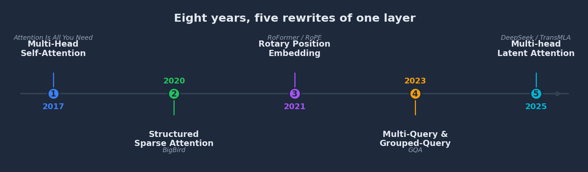
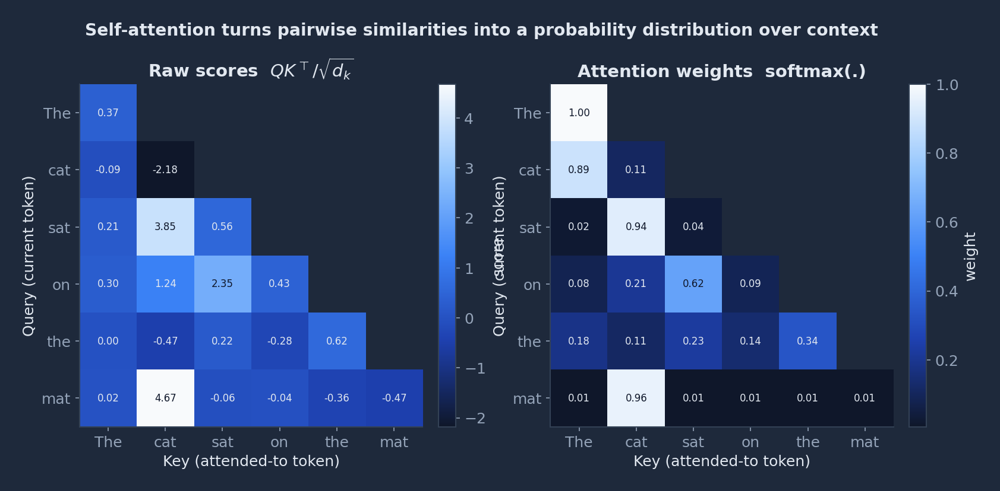
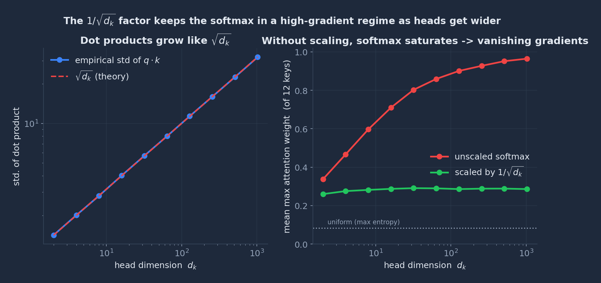
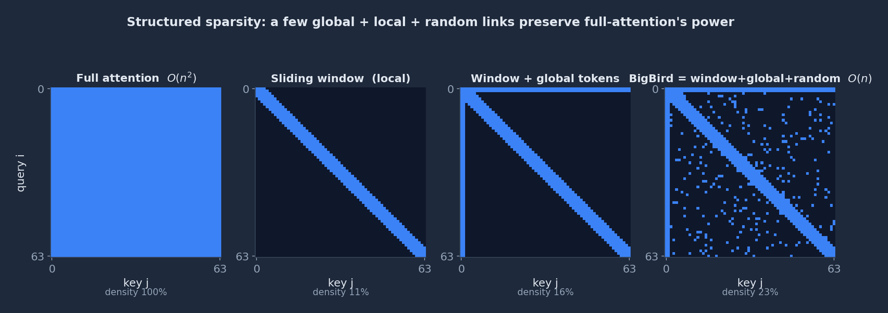
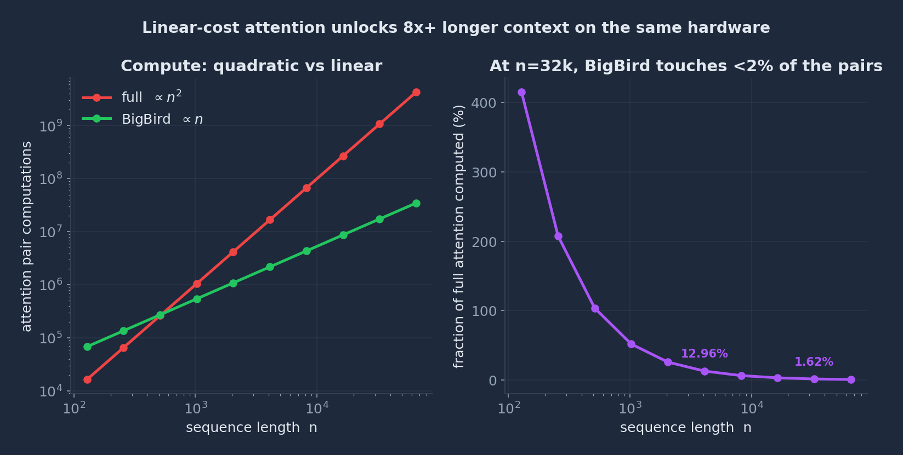
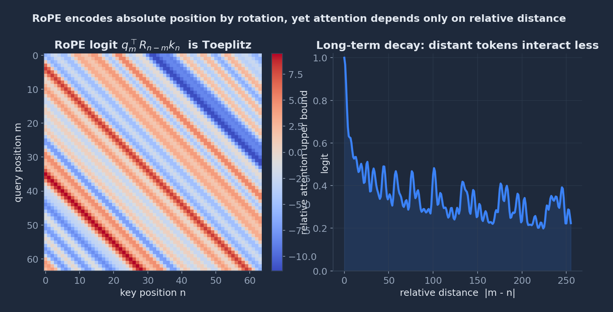
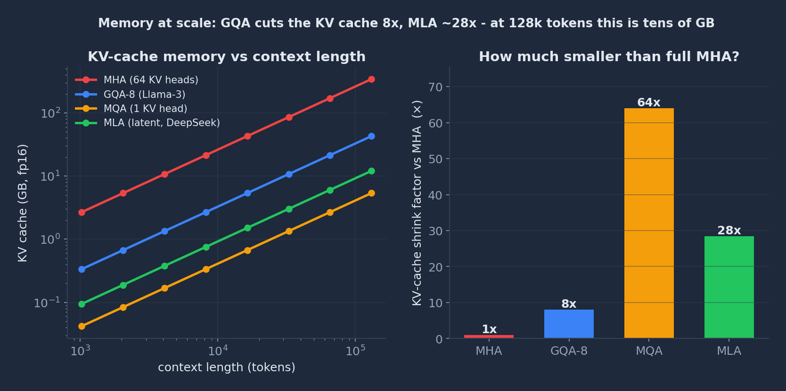
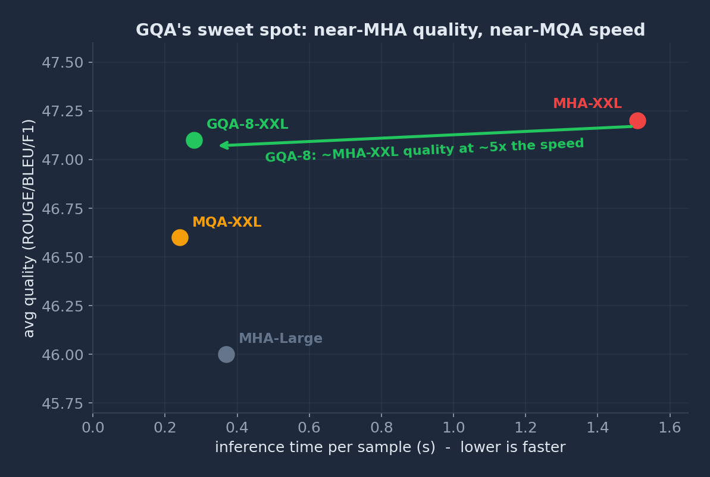
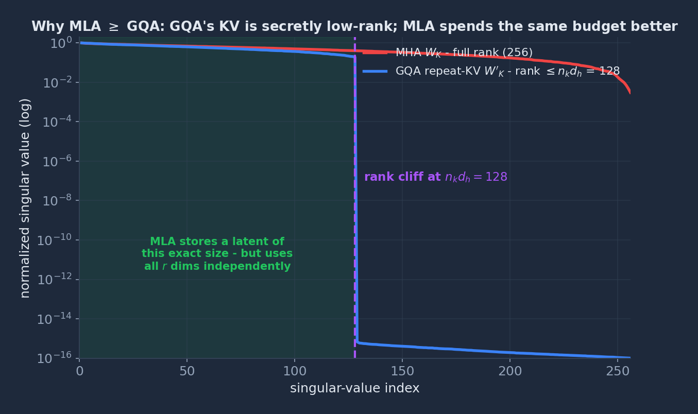

Is Attention Still All You Need? Eight Years of Rewriting One Layer
A guided tour through the one layer that defines modern AI: the math, the intuition, and the engineering trade-offs, with simulations you can reproduce.

Open the hood of any frontier model, GPT, Llama, Qwen, Gemma, DeepSeek, and at the bottom you find the same beating heart: the attention layer. It is a remarkably small idea. The core computation fits in a single line of linear algebra and a softmax. You could write it on a napkin.
And yet that napkin has been rewritten at least five times in eight years. Each rewrite kept the silhouette of the original but changed something deep inside, how it spends compute, how it remembers position, how much memory it hoards at inference time. Each one was worth, quite literally, billions of dollars in serving costs or an order of magnitude in context length.
This post walks through those five rewrites in order. For each, I’ll give you the intuition first, then the mathematics, then the effect on LLMs, and a simulation computed from scratch (every figure here comes from a real NumPy experiment; the generator ships with this post as blog/assets/attention_figures.py). By the end you’ll have a working mental model of why the attention layer looks the way it does today, and where it’s heading next. And the title, a deliberate echo of the 2017 paper that started it all, is a question we’ll be in a position to answer by the end.
Here’s the map:
| # | Rewrite | Core move | What it bought us | Seen in |
|---|---|---|---|---|
| 1 | Multi-Head Self-Attention | Pairwise similarity → softmax → weighted sum, in parallel heads | A trainable, fully-parallel “soft lookup” | Every transformer since 2017 |
| 2 | Structured Sparse Attention | Drop most pairs; keep window + global + random | $O(n^2)\to O(n)$ with proofs | Long-context encoders; revived in NSA/DSA |
| 3 | Rotary Position Embedding | Rotate Q/K by angle ∝ position | Relative position + clean length extrapolation | Llama, Qwen, Mistral, almost everything |
| 4 | Multi-Query / Grouped-Query Attention | Share K/V heads across queries | 8–64× smaller KV cache → cheap inference | Llama 3, Mistral, Gemma, GPT-OSS |
| 5 | Multi-head Latent Attention | Cache a compressed latent, not full K/V | ~28× smaller cache and more expressive | DeepSeek V2/V3/R1 |
A note on framing. I’m treating each paper as a rewrite of one layer rather than five unrelated tricks. That framing is the whole point: the field keeps returning to the same five lines and asking “what if we changed this term?”
1. Multi-Head Self-Attention, the compute graph everything else inherits
The intuition. Attention is a soft dictionary lookup. Every token emits a query (“what am I looking for?”), every token exposes a key (“what do I offer?”) and a value (“what I’ll hand over if you pick me”). A token compares its query against all keys, turns the match scores into a probability distribution with softmax, and reads out a weighted blend of values. No recurrence, no convolution, just content-based routing that runs fully in parallel.
The mathematics. The entire mechanism is two equations. Scaled dot-product attention:
$$\text{Attention}(Q,K,V)=\operatorname{softmax}\!\left(\frac{QK^{\top}}{\sqrt{d_k}}\right)V$$
and the multi-head wrapper that runs $h$ of these in parallel subspaces and concatenates them:
$$\text{MultiHead}(Q,K,V)=\text{Concat}(\text{head}_1,\dots,\text{head}_h)\,W^{O},\qquad \text{head}_i=\text{Attention}(QW_i^{Q},\,KW_i^{K},\,VW_i^{V}).$$
The original transformer used $h=8$ heads with $d_k=d_v=d_{\text{model}}/h=64$. Splitting the model dimension across heads lets each head specialize, one tracks syntax, another coreference, another position, at no extra compute, since the per-head dimension shrinks proportionally.

Why the $\sqrt{d_k}$? This is the most quietly important detail in the paper. If query and key entries are independent with unit variance, then $q\cdot k=\sum_{i=1}^{d_k} q_i k_i$ has variance $d_k$, so its standard deviation grows like $\sqrt{d_k}$. Feed those ballooning logits into softmax and it saturates: one key wins ~100% of the weight and the gradient through softmax collapses. Dividing by $\sqrt{d_k}$ holds the logits at unit scale. As the authors put it:
“We suspect that for large values of $d_k$, the dot products grow large in magnitude, pushing the softmax function into regions where it has extremely small gradients. To counteract this effect, we scale the dot products by $\tfrac{1}{\sqrt{d_k}}$.”
— Vaswani et al., Attention Is All You Need

Feel it yourself: attention on your own words
Reading about a soft lookup is one thing; watching it form on a sentence you typed is another. The widget below runs real scaled dot-product attention, the exact equation above, live in your browser. Type any sentence and each row of the grid becomes a probability distribution over the words it can see. Then play with the two knobs that the paper is really about: widen the head dimension $d_k$ or switch off the $1/\sqrt{d_k}$ scaling, and watch the rows collapse onto a single word as the softmax saturates, the failure mode Figure 2 quantifies, now under your fingers.
Self-attention, live
Each cell is the attention weight from a query word (row) to a key word (column). Rows sum to 1. Hover a cell for its raw score and weight.
Honesty note: the token embeddings here are deterministic and illustrative (built from character n-grams, so repeated and similar words attend to each other), they are not from a trained model. The operations, dot-product scoring, the $1/\sqrt{d_k}$ scaling, the causal mask, and the softmax, are exactly the real thing.
The effect on LLMs. This is the layer’s compute graph, the dependency structure that GPUs and TPUs are now physically optimized around. Its one structural liability is also visible right here: that $QK^\top$ matrix is $n\times n$, so cost scales quadratically with sequence length $n$. Every rewrite that follows is, in some sense, an attack on a different cost in this graph, the quadratic compute, the position handling, or the memory it leaves behind. Hold this picture; the rest of the post deforms it.
2. Structured Sparse Attention, sparsity with a proof, not a prayer
The intuition. Full attention lets every token see every other token. But does it need to? Most linguistic dependencies are local, with a few long-range hops. So: let each token attend to a small sliding window of neighbors, a handful of random tokens, and a few global tokens that everyone can see and that see everyone. Sprinkle those three together and you get a sparse graph that behaves like the dense one, at a fraction of the cost.
The danger is obvious: ad-hoc sparsity patterns are a graveyard of heuristics that quietly break what made attention powerful. BigBird’s contribution was to prove they don’t have to.
The mathematics. Replace “attend to all $j$” with “attend to a neighborhood $N(i)$”:
$$\text{head}(x_i)=\operatorname{softmax}\!\left(\frac{Q(x_i)\,K(x_{N(i)})^{\top}}{\sqrt{d_k}}\right)V(x_{N(i)}),\qquad N(i)=\underbrace{W(i)}_{\text{window}}\ \cup\ \underbrace{G}_{\text{global}}\ \cup\ \underbrace{R(i)}_{\text{random}}.$$
Because $|N(i)| = w+g+r$ is a constant independent of sequence length, total cost is $O(n)$ rather than $O(n^2)$. The theoretical payoff is what elevates this from heuristic to architecture:
“We show that BigBird is a universal approximator of sequence functions and is Turing complete, thereby preserving these properties of the quadratic, full attention model.”
— Zaheer et al., Big Bird: Transformers for Longer Sequences
The proof leans on the global tokens: a handful of $O(1)$ nodes that everyone routes through is enough to recover the expressive reach of full attention with only $O(n)$ inner products.


The effect on LLMs. BigBird and its cousins (Longformer, ETC) made document-scale encoders practical, QA and summarization over thousands of tokens. For a while, dense attention plus FlashAttention’s clever IO scheduling stole the spotlight, and structured sparsity looked like a 2020 idea. Then it came roaring back: DeepSeek’s Native Sparse Attention (NSA), which won a Best Paper Award at ACL 2025, uses exactly this template (compressed/global, selected, and sliding-window branches) but makes the selection learnable and hardware-aligned, and trains it end-to-end. The lesson BigBird proved is the one the frontier is now cashing in:
Structural sparsity isn’t a lossy approximation of attention, under the right pattern, it is attention, with the same theoretical guarantees and a linear bill.
3. Rotary Position Embedding, turning position into a rotation
The intuition. Attention is permutation-equivariant: shuffle the tokens and the math doesn’t notice. So order has to be injected somehow. The original transformer added a position vector to each token. RoPE does something more elegant, it rotates each token’s query and key by an angle proportional to its position. Two tokens that are close get similar rotations; two tokens far apart get very different ones. Crucially, when you take a dot product between a rotated query and a rotated key, the absolute angles cancel and only the difference survives. Absolute encoding goes in; relative encoding comes out, for free.
The mathematics. In 2D, position $m$ acts as a rotation matrix:
$$f_{\{q,k\}}(x_m,m)=\begin{pmatrix}\cos m\theta & -\sin m\theta\\ \sin m\theta & \cos m\theta\end{pmatrix} W_{\{q,k\}}\,x_m.$$
Generalize to $d$ dimensions by stacking $d/2$ such rotation blocks, each spinning at its own frequency $\theta_i=10000^{-2(i-1)/d}$:
$$f_{\{q,k\}}(x_m,m)=R^{d}_{\Theta,m}\,W_{\{q,k\}}\,x_m.$$
Now the key identity. Because rotations compose by adding angles, $\big(R_{m}\,q\big)^{\!\top}\big(R_{n}\,k\big)=q^{\top}R^{d}_{\Theta,\,n-m}\,k$, the attention logit depends only on the relative offset $n-m$:
$$q_m^{\top}k_n = x_m^{\top}W_q^{\top}\,R^{d}_{\Theta,\,n-m}\,W_k\,x_n.$$

The effect on LLMs. RoPE quietly won. It needs no extra parameters, plays nicely with the linear-attention reformulation, and, because position is a continuous rotation rather than a lookup into a fixed table, it extrapolates to sequence lengths never seen in training far more gracefully than learned absolute embeddings. That single property kicked off the long-context era: techniques like NTK-aware scaling and YaRN are all just clever ways of re-tuning RoPE’s frequencies $\theta_i$ to stretch a model’s context window after the fact. When you read “we extended this model to 128k context,” there’s a very good chance someone was turning RoPE’s dials. It’s now the default in Llama, Qwen, Mistral, Gemma, and the DeepSeek family.
4. Multi-Query & Grouped-Query Attention, the KV cache is the bill
The intuition. During generation, a model produces one token at a time and caches the keys and values of every prior token so it doesn’t recompute them, the KV cache. The catch: at every single step the hardware must re-read that entire cache from memory. With long contexts and many heads, you become memory-bandwidth bound, the GPU’s math units sit idle waiting for the cache to stream in. The fix is brutally simple: stop storing a separate key/value for every query head. Let many query heads share one key/value head.
The mathematics. Standard MHA keeps $n_q$ key/value heads. Multi-Query Attention (MQA) keeps exactly one, shared across all queries. Grouped-Query Attention (GQA) interpolates: split the $n_q$ query heads into $G$ groups, each sharing a single K/V head.
$$\text{GQA-}G:\quad n_{kv}=G,\qquad \text{MQA}=\text{GQA-}1,\qquad \text{MHA}=\text{GQA-}n_q.$$
The KV cache (and the bandwidth you pay every step) scales with $n_{kv}$:
$$\text{KV cache} = 2\,(K,V)\times n_{\text{layers}}\times n_{kv}\times d_{\text{head}}\times n_{\text{tokens}}\times \text{(bytes)}.$$
To create a GQA model without retraining from scratch, GQA’s authors mean-pool the original heads within each group and then “uptrain” for just $\alpha=5\%$ of the original compute, recovering quality almost for free.


The effect on LLMs. This is the rewrite that decides what you can afford to deploy. MQA was first proposed by Noam Shazeer in a paper whose title says it all,
“Fast Transformer Decoding: One Write-Head is All You Need.”
— Shazeer (2019)
— but MQA alone can hurt quality and destabilize training. GQA found the knee of the curve, and the industry voted with its weights: Llama 3 uses GQA at every size (8 KV heads throughout, 4 query heads per KV head at 8B, 8 per KV head at 70B), as do Mistral, Qwen2.5, and Gemma. For edge and small-language-model deployment, where memory is the binding constraint, the size of the KV cache is the product spec.
5. Multi-head Latent Attention, compress the cache, keep the expressiveness
The intuition. GQA shrinks the cache by throwing heads away. But what if the cache is compressible without losing information? MLA’s move: don’t cache full keys and values at all. Project each token down into a small latent vector $c^{KV}$, cache that, and re-expand it back into full keys and values on the fly during attention. You trade a little extra compute (the up-projection) for a lot less memory traffic, a great deal on hardware that is bandwidth-starved, not compute-starved.
The deep insight from TransMLA is why this is strictly better than GQA. It turns out GQA’s “repeat the K/V heads” trick is secretly a low-rank factorization, and a wasteful one.
The mathematics. GQA expands its few K/V heads up to $n_q$ by replication. Replicating the projection matrix $W_K$ produces a $D\times D$ matrix $W'_K$ whose rank is capped at $n_k d_h$ (the heads are copies, so they’re linearly dependent). Any such matrix factors via SVD:
$$W'_K = W^{a}_K\,W^{b}_K,\qquad W^{a}_K\in\mathbb{R}^{D\times r},\ \ W^{b}_K\in\mathbb{R}^{r\times D},\ \ r\le n_k d_h.$$
So you only need to cache the small latent $X W^a_K \in \mathbb{R}^{T\times r}$ and expand with $W^b_K$ at attention time. MLA caches a latent of exactly this size, DeepSeek-V2 uses $d_c=512$ plus a $d_{\text{rope}}=64$ decoupled-RoPE key, but here’s the kicker: GQA is forced to fill those $r$ dimensions with replicated (hence redundant) directions, whereas MLA is free to use all $r$ directions independently. Same cache budget, more degrees of freedom. That’s the theorem:
Theorem 1. “The expressiveness of MLA is greater than that of GQA when both have the same size of KV cache.”
— Meng, Yao & Zhang, TransMLA

The effect on LLMs. MLA is the reason DeepSeek can serve a frontier model cheaply: DeepSeek-V2 reported a 93.3% reduction in KV cache versus their dense 67B model, and boosted maximum generation throughput to 5.76×. TransMLA closes the loop by showing any existing GQA model (Llama, Qwen, Mixtral) can be converted to MLA via SVD and fine-tuned to higher quality without growing the cache, a low-cost migration path that doesn’t require pretraining from scratch.
And MLA rarely travels alone now. DeepSeek-V3.2-Exp (September 2025) pairs latent compression with DeepSeek Sparse Attention (DSA), a lightning indexer that selects ~2048 KV entries per query, to push long-context attention toward near-linear $O(kL)$ cost and cut long-context API prices by roughly half. (The full DeepSeek-V3.2 paper, arXiv:2512.02556, followed in December 2025.) Which is to say: the frontier is now combining rewrite #2 (learnable sparsity) with rewrite #5 (latent compression) in the same layer.
Where this leaves us
Step back and the eight years tell a clean story. The attention layer began as a dense, full-rank, quadratic-cost object that stored everything and computed everything (#1). Then, one term at a time, the field interrogated each cost:
- The quadratic compute → make the attention graph sparse, with proofs that it loses nothing (#2, and now NSA/DSA).
- The position handling → encode it as a rotation so attention sees relative distance and extrapolates (#3).
- The memory bandwidth → share K/V heads (#4), then compress them into a learned latent (#5).
What’s striking is that none of these threw away the napkin equation. They deformed it, sparsifying the $QK^\top$ graph, rotating $Q$ and $K$, factoring the K/V projections, while keeping the soft-lookup-then-blend skeleton intact. Attention has proven less like a fixed component and more like a design space the field keeps re-exploring.
So the question worth sitting with isn’t whether we’ll keep optimizing attention, we obviously will. It’s this:
Every rewrite so far has preserved the softmax-over-dot-products core. The newest frontier models are converging on learnable sparsity + latent compression stacked in a single layer, attention that decides what to look at and how compactly to remember it. At what point does that stack stop being “an optimization of attention” and become a genuinely different mechanism, and will the next foundational paper still be able to claim that attention is all you need?
Figures & reproducibility
Every figure above was computed from scratch with a single self-contained NumPy/Matplotlib script, the attention pass and softmax in Figure 1, the $\sqrt{d_k}$ sampling experiment in Figure 2, the sparsity masks and scaling in Figures 3–4, the Toeplitz RoPE logits in Figure 5, the exact KV-cache arithmetic in Figure 6, and the SVD rank-cliff in Figure 8. The generator ships with this post as blog/assets/attention_figures.py; run it to reproduce every number quoted here. The interactive visualizer runs the same scaled-dot-product attention, live, in your browser.
Sources & further reading
- Vaswani et al. (2017). Attention Is All You Need. arXiv:1706.03762, multi-head self-attention and the $1/\sqrt{d_k}$ scaling.
- Zaheer et al. (2020). Big Bird: Transformers for Longer Sequences. arXiv:2007.14062 (NeurIPS 2020), structured sparsity, universal approximation, Turing completeness.
- Su et al. (2021). RoFormer: Enhanced Transformer with Rotary Position Embedding. arXiv:2104.09864.
- Ainslie et al. (2023). GQA: Training Generalized Multi-Query Transformer Models from Multi-Head Checkpoints. arXiv:2305.13245, mean-pool conversion + ~5% uptraining.
- Meng, Yao & Zhang (2025). TransMLA: Multi-head Latent Attention Is All You Need. arXiv:2502.07864, Theorem 1 (MLA > GQA at equal cache).
- DeepSeek-AI (2024). DeepSeek-V2. arXiv:2405.04434, reports the 93.3% KV-cache reduction and 5.76× throughput vs. their dense 67B.
- Yuan et al. (2025). Native Sparse Attention: Hardware-Aligned and Natively Trainable Sparse Attention. arXiv:2502.11089, a Best Paper Award, ACL 2025.
- DeepSeek-AI (2025). DeepSeek-V3.2-Exp (Sept 2025) introduced DeepSeek Sparse Attention (DSA) and ~50% long-context price cuts; the full DeepSeek-V3.2 paper followed as arXiv:2512.02556 (Dec 2025).
- Shazeer (2019). Fast Transformer Decoding: One Write-Head is All You Need. arXiv:1911.02150, the original MQA paper.
- Meta AI (2024). The Llama 3 Herd of Models. arXiv:2407.21783, GQA with 8 KV heads at every model size.
- Peng et al. (2023). YaRN: Efficient Context Window Extension of Large Language Models. arXiv:2309.00071, re-tuning RoPE frequencies for long context.